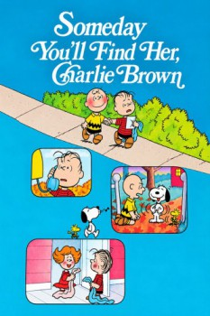

Country:United States, 24 minutes
Spoken languages:English
Genres:Family, Animation, Comedy
Director(s):Phil Roman
Writer(s):Charles M. Schulz
Video Codec:Unknown
Number: 6268

Certification:NR
Storyline:
While watching the big football game on TV, Charlie Brown falls for a girl in the crowd and vows to find her with Linus' help. When they do find her Charlie Brown is too nervous to talk to her, and asks Linus to talk to her for him. However, that move could spell doom once again for the love-starved Charlie Brown.
Cast:
Grant Wehr (voice of Charlie Brown), Jennifer Gaffin (voice of Little Girl (Mary Jo)), Rocky Reilly (voice of Linus van Pelt), Melissa Strawmyer (voice of Teenager), Nicole Eggert (voice of Loretta)
Medium: Media file,
Location: D:\Charlie Brown Cartoons\Someday you_ll find her Charlie Brown.mp4
Loaned: No
Aspect ratio: Unknown